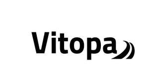

Trade Mark Journal No.2026/005 30 January 2026
UK00004325604 17 January 2026 (10)

- Class 10
- Medical gloves; Latex medical gloves; Medical examination gloves; Gloves for medical examinations; Gloves for medical use; Wheeled walkers to aid mobility; Mobility aids; Wheels for pets [mobility aids]; Disability walkers; Pet walking aids; Gloves for medical purposes; Disposable protective gloves for medical purposes; Boots for medical purposes; Respirators for medical purposes; Syringes for medical purposes; Physical exercise apparatus, for medical purposes; Physical exercise apparatus for medical purposes; Exercise apparatus for medical rehabilitative purposes; Physical exercise machines for medical purposes; Exercise simulating apparatus for medical purposes; Latex gloves for medical use; Protective gloves for medical use; Rubber gloves for medical use; Examination gloves for medical use; Gloves for veterinary use; Rollators; Wheeled trolleys adapted for use as walking aids; Pads for seats for wheelchairs [for medical use]; Crutches; Gurneys, wheeled; Stretchers, wheeled; Bariatric patient stretchers; Walking frames for disabled persons; Smart walking sticks for persons with a visual impairment; Walking aids [for medical purposes]; Walking aids for medical purposes; Walking sticks for medical purposes; Slings specially adapted for transporting persons with disabilities; Bath boards adapted for persons with physical disabilities; Acoustic amplifiers [hearing aids] for partially deaf persons; Assistive devices adapted for persons with disabilities; Therapeutic and assistive devices adapted for persons with disabilities; Isolation booths fitted with medical equipment; Endoscopic equipment for medical purposes; Medical furniture and bedding, equipment for moving patients; Dental equipment; Medical trays; Mittens for medical use; Needles for medical use; Warmers for medical use; Tweezers for medical use; Pliers for medical use; Therapeutic devices adapted for persons with disabilities; Protective masks for use by persons working in the dentistry; Apparatus for use by colostomy patients; Apparatus for use by dentists; Protective gloves for use by persons working in the dentistry; Commode chairs; Chairs (Commode -); Massage chairs; Dental chairs; Birthing chairs; Electric massage chairs; Rehabilitation apparatus (Body -) for medical purposes; Body rehabilitation apparatus for medical purposes; Exercising apparatus for medical rehabilitative purposes; Apparatus for medical rehabilitation; Massage apparatus [for medical purposes]; Surgical masks; Disposable gloves for surgical use; Surgical breathing masks; Face masks for surgical use; Disposable hypodermic syringes for surgical use; Knee crutches; Tips for crutches for the disabled; Crutches for the disabled (Tips for -); Knee bandages, orthopedic; Bandages (Knee -), orthopedic; Canes for medical purposes; Quad canes for medical purposes; Splints [for medical purposes]; Needles for medical purposes; Corsets for medical purposes; Wearable walking assistive robots for medical purposes; Support bandages for medical purposes; Medical instruments for use as aids to hearing; Exercise boots for medical rehabilitative purposes; Exercise equipment for medical rehabilitative purposes; Medical stretchers; Medical prostheses; Medical devices; Medical ventilators; Medical stethoscopes; Medical inhalers; Exercisers [expanders] for medical therapy; Medical dosage dispensers for medical use; Medical blankets for the warming of patients; Protective masks for use by persons working in medicine; Protective gloves for use by persons working in medicine; Disability lifts; Baths (Hoists for assisting the disabled out of -); Therapeutic garments for people; Acoustic amplifiers for partially deaf persons; Hearing aids for the deaf [acoustic aids]; Knee guards in the nature of supports [other than sports articles]; Hearing aids for the deaf; Portable urination aids for women; Orthopaedic healing aids; Sex aids; Weights for physical exercise [adapted for medical use]; Asymmetrical bars for physical exercise [adapted for medical use]; Therapeutic and assistive devices adapted for the disabled; Therapeutic devices adapted for the disabled; Assistive devices adapted for the disabled; Physical exercise articles for physical training [for medical purposes].
Hangzhou Zexu Technology Co., Ltd.
Representative: DY CNUK Ltd